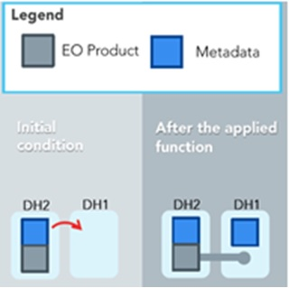
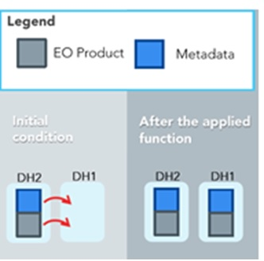
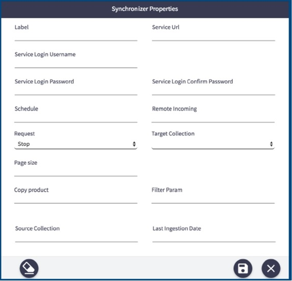

OData Synchronizer Panel
The DHuS provides end users an OData synchronizer service able to populate a DHuS instance with the data stored on the rolling archive of another DHuS instance. The DHuS instance containing the data to be synchronized is called back end instance, while the one that shall receive the data is called "front end" instance. Before delving into the configuration details, it is worth clarifying the following terminology used for operational functions:
•Metadata synchronization :Copy of product metadata from a site to another. The copy is performed according to predefined synchronization selection criteria
•Product Synchronization: Copy of product and metadata from a site to another.This is different from a product re-ingestion.
In case the rolling archive of the Back End contains some products not present in the Front End, once the synchronization runs, the synchronization mirrors products present in the Back End instance respecting the synchronization specification (according chosen configuration) and that are not in the database of the Front End instance (in case of metadata synchronization, only the metadata will be mirrored). The OData Synchronizers panel is the User interface allowing the creation and update of synchronizers among two or more DHuS instances.
Preconditions
The FE/BE instances should be configured as follows:
• BE: DHuS instance with no quota limitation and having a user with the archive management function enabled.
•FE: having the synchronization functionality enabled, meaning that the dhus.xml of the FE shall contain the following setting:
<executor enabled="true" batchModeEnabled="false">
In case a proxy has been set up between BE and FE, please change the network properties in order to include the BE in the list of IP that can access to BE without going through the proxy.
How to create a new Synchronizer?
The Administrator shall:
Step 1: Log in as Root in the front end DHuS instance and select the tab user profile
Step 2: Select the panel OData synchronizers

OData Synchronizer access
Step 3: Click on Create synchronizer

OData Synchronizer panel
Step 4: Fill the records as follows:
•Label= Name of the synchronizer
•Service URL= https://[Back-End_DHuS_address]/odata/v1
• Service Login Username= User name of a user registered in the back end. In case of metadata synchronization, the archive manager rights enabled are requested for this user, otherwise the synchronization between Back End and Front End would log errors or, if the remote incoming parameter is left blank, the dhus will synchronize only the Back End catalogue.
•Service Login Password= password of the user in the previous step
• Schedule= how often the synchronizer shall be running.
•Remote incoming=absolute path incoming of the incoming folder configured for the DHuS installed on the Back End instance (it must be specified ONLY if the “Copy product” field is set as false)
•Request= start or stop
•Target Collection= is a nullable and modifiable property with no default value. If specified, the synchronized products will be filed in the referenced FE Collection
•Page size= number of products synchronized at each synchronizer run (in case of product synchronization, the number configured in this field will determinate how many products will be simultaneously copied (it is suggested to set this parameter lower than the total number of threads allowed in the system).
• Copy product= this parameter determinates if the synchronization is a metadata synchronization or is a products synchronization:
• False: the synchronizer will synchronize only the metadata of the products (the products are stored only in the Back End incoming folder)
• True: the synchronizer will make a copy of the products in the Front End incoming folder during the synchronization.
Note that if this parameter is set as true, the “Remote Incoming” field shall be set as empty.
•Filter Parameter= following the odata filters syntax, it filters the products and synchronize the only one respecting this filter. Example: substringof(‘S1A_’,Name) For reference see : https://scihub.copernicus.eu/userguide/5APIsAndBatchScripting
•Source Collection= Back End Collection filter: only the products on the Back End instances, which are belonging to the configured collection, will be synchronized to the Front End instance. If this field is left empty, the synchronizer will synchronize every products without any check on their Back End collection.
• Last Ingestion Date= Filter on the Ingestion date of the products stored in the Back End instances. Products with ingestion date >= of the one here indicated will be synchronized. Once the synchronizer ends, this field is updated with the ingestion date of the last synched product. During the next synchrionizer start (according the set “Schedule”), only products with the ingestion date > of the one here indicated will be synchronized.
Step 5: Click on the button with the floppy disk shape.
How to update a Synchronizer?
The Administrator shall:
Step 1: Log in as Root in the front end DHuS instance and select the tab user profile;
Step 2: Select the panel OData synchronizers and then click on the pencil next to the synchronizer to be updated

Updating a synchronizer
Step 1: Edit the records to be updated
Step 2: Click on the button with the floppy disk shape
How to delete a Synchronizer?
The Administrator shall:
Step 1: Log in as Root in the front end DHuS instance and select the tab user profile;
Step 2: Select the panel OData synchronizers and then click on the X shaped button next to the synchronizer to be updated.
Next to an existing synchronizer tab, there are also buttons for starting and stopping the item. The play button is to start the synchronizer; the square button is to stop it.